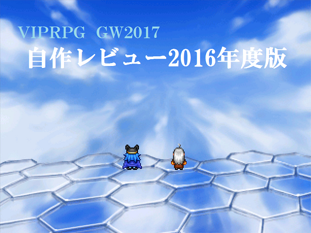

| No.27 自作レビュー2016年度版 | |
 | |
| 【作者名】秋草 | |
| 【使用ツール】2000 | |
| 【ジャンル】レビュー＆見るゲ | |
| 【配信/投稿】〇/〇 | |
| 【作者コメント】 ■自作レビュー2016年度版 今回のメイン作品。 どっかでレビューをやりたかったので、 GWで行うことにしました。 2016年4月から2017年3月までにスレに投下したksgを レビューしていきます。 ついでに、途中でエターなった作品も紹介します。 ※数が膨大なため(70作品以上)、 アレブラや数秒で終わるksgはレビュー対象外にするかも知れま せん。 ※ksgの移植を考えていますが、実現できるか分かりません。 ※詳細なSSは製作が進んだら公開する予定です。 ■見るゲ集 ・運命の道標 ～未来を共に歩む者～ もともとGWに投稿しようとしていた中編見るゲ。 作れるか不明なので内容は省きます。 もしも出来たら夏の陣の予告みたいになると思います。 ・主役キャラクターランキング 3years 2014年4月から2017年3月までにスレ投下されたゲーム3 922作品について、メインキャラとして登場した回数を、 キャラ毎にランキングしていきます。 まだ構想段階です。 他ksgとか。 | |
| 【管理人コメント】 自作品レビュー作れるほど自作品がない……。 | |
| ダウンロード / 感想掲示板 | |
| 前の作品へ / 次の作品へ | |